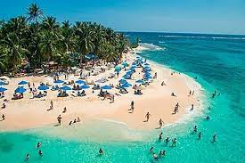
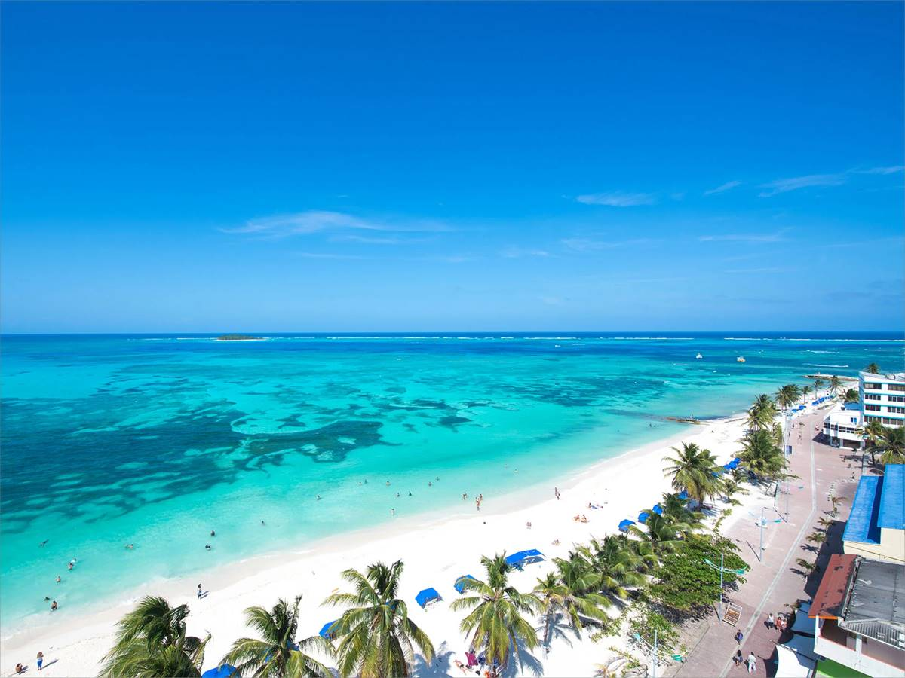
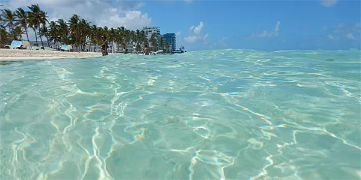
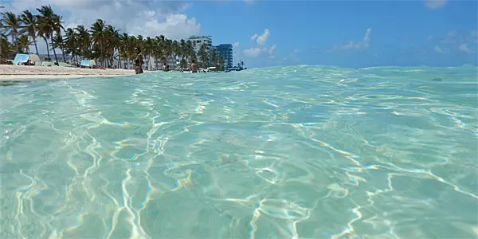
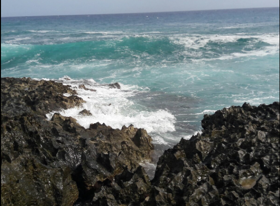
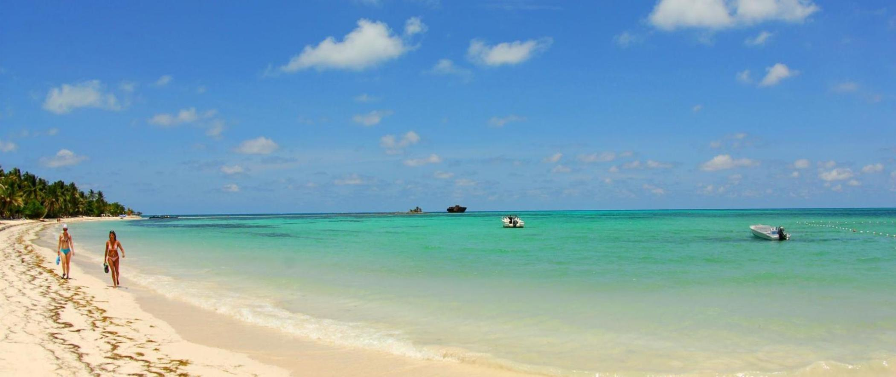
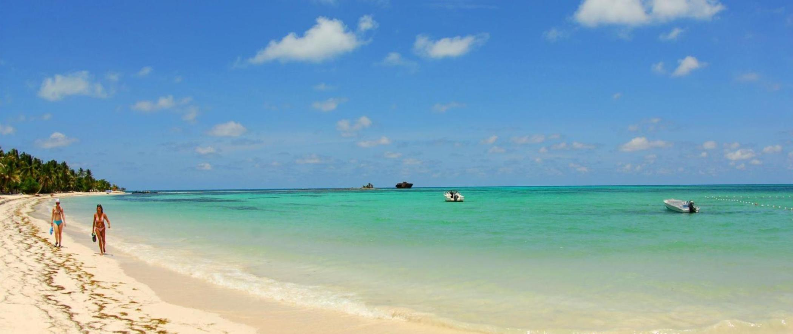

Praias para visitar
-
Johnny Caydirections_car
0 min
directions_walk0 min
Quando se pensa nas melhores praias em San Andrés é comum falar sobre a Johnny Cay, onde você terá a oportunidade de explorar praias paradisíacas, mergulhar em recifes de coral e desfrutar de uma variedade de atividades aquáticas, como snorkeling e caiaque.
 -
Praia de San Luisdirections_car
23 min
directions_walk2h4m
Localizada na costa leste de San Andrés, San Luis Beach oferece tranquilidade e relaxamento em comparação com as praias mais movimentadas da ilha. Com suas águas calmas e rasas, é um local ideal para famílias com crianças pequenas e para os que desejam mergulhar.
Você poderá alugar cadeiras de praia e guarda-sóis, ou optar por explorar os arredores através de atividades como snorkeling e passeios de caiaque
Além disso, a praia é cercada por restaurantes que oferecem frutos do mar frescos e outras iguarias locais. Vale a pena conhecer essa que é uma das melhores praias em San Andrés! -
Playa Spratt Bightdirections_car
9 min
directions_walk20 min
Outra das melhores praias é a Playa Spratt Bight, um ambiente tranquilo para banhos de sol e natação. Lá você pode alugar equipamentos para snorkeling, fazer passeios de jet ski ou simplesmente dar um passeio ao longo da costa. Como sua localização é central, esse é um ponto forte para acessar facilmente as lojas, restaurantes e bares.
 -
Praia de Sound Baydirections_car
24 min
directions_walk1h31m
Localizada na parte norte da ilha, a Praia de Sound Bay é conhecida pelas águas tranquilas, ideais para aproveitar em família. Você pode chegar lá de táxi ou alugando uma bicicleta, scooter ou carro.
A praia é tranquila e menos frequentada do que algumas das praias mais populares de San Andrés, oferecendo um ambiente sereno para relaxar e desfrutar da natureza.
Não há muitas facilidades disponíveis, então é uma boa ideia trazer seus próprios lanches e bebidas. Aproveite para nadar, fazer snorkeling ou simplesmente contemplar o pôr do sol! 

-
Praia de Hoyo Sopladordirections_car
31 min
directions_walk3h14m
A Praia de Hoyo Soplador é famosa pelo fenômeno natural do “soplador”, onde a água é expelida através de uma fenda na rocha, criando um efeito espetacular. A praia oferece algumas facilidades, como restaurantes à beira-mar e aluguel de equipamentos de snorkeling. Além de observar o soplador, você também pode desfrutar de atividades como natação, snorkeling e relaxamento na praia.
 -
Praia de Cocoplumdirections_car
17 min
directions_walk1h26m
Cocoplum é uma das melhores praias em San Andrés e conhecida por sua beleza natural. A praia oferece algumas facilidades, como restaurantes à beira-mar e aluguel de cadeiras e guarda-sóis.
Desfrute de atividades como snorkeling, mergulho, passeios de banana boat e relaxamento na praia. A área também é popular entre os praticantes de kitesurf devido às suas condições ideais de vento. 
